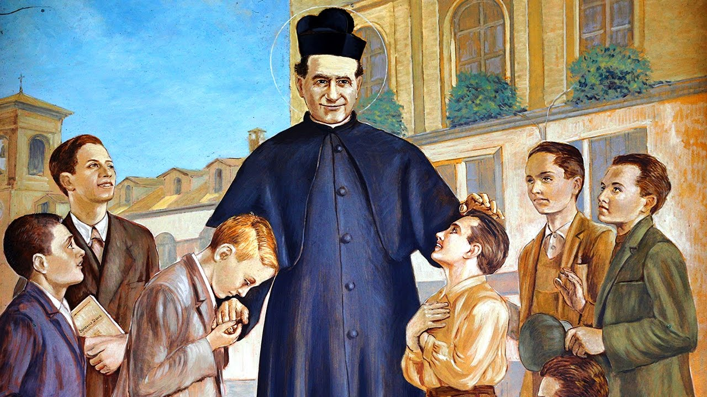

Inspired by the prisons he saw full of young boys, John Bosco dedicated his life to the betterment and education of street children, juvenile delinquents, and other disadvantaged youth. He and his mother sought to cloth, feed, and find work for these boys. For the apprentices he hired out, Bosco negotiated contracts to prevent their abuse. All this to earn him the title "Father and Teacher of Youth" when he was canonized.
But he needed a way to catch the attention of children, get kids interested in coming to church, back in school and accepting the aid he was offering. Luckily, as a boy he had cobbled together enough knowledge from magic shows he witnessed, to put on his own shows for neighborhood kids. Becoming known for magic tricks he would perform for children, he was formally declared the patron saint of stage magicians in 2002.
Image: catholic.org © Copyright 2020 Catholic Online